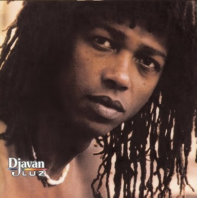

O disco de 1989 não tem título, a não ser o próprio nome do autor. Entretanto, o trabalho acabou ficando conhecido como: "aquele do Oceano". Não que o resto das canções não tenha importância. Muito pelo contrário. Trata-se de um dos melhores conjuntos de canções já reunidos por Djavan. É que “Oceano” é considerada a canção perfeita: em forma e conteúdo, em música e em letra, na riqueza melódica e harmônica que não impede que a música grude no ouvido, na empatia que ela tem, ao mesmo tempo, com os especialistas e com o grande público.
Mas o disco tem mais. Há também um forte clima espanhol que pode ser ouvido, por exemplo, em “Oceano” - no solo de Paco de Lucia, maior violonista flamenco do mundo - e nas faixas “Vida real” e “Cigano”, canção pop típica do artista que fez grande sucesso.
Este trabalho tem também a volta de Djavan à temática indígena. Em “Curumim” ele explora a sonoridade da própria música indígena, de forma mais lúdica, encenando um diálogo entre dois indiozinhos, que protagoniza com sua filha, Flavia Virginia.
Em "Corisco", o destaque está na parceria com Gilberto Gil.
O disco tem ainda a primeira incursão de Djavan no choro, gênero que ele nunca tinha explorado, até a parceria com Nelson Motta que resultou em "Você bem sabe", um choro moderno, cuja letra provocadora inclui trechos inteiros em inglês.

Por conta de sua musicalidade brasileira típica de exportação Djavan recebeu, em 1982, o convite da gravadora CBS (futura Sony Music) para, não só, ser lançado nos Estados Unidos, como também gravar nos míticos estúdios americanos.
Em solo estrangeiro, trabalhou sob a produção de Ronnie Foster, até então um dos principais produtores da soul music americana e, ao lado de renomados músicos lá consagrados, além de sua inseparável banda Sururu de Capote, gravou mais um álbum brilhante.
Nessa passagem pelos Estados Unidos, Djavan não conquistou apenas o público norte-americano. Elogios oriundos de nomes como o do produtor Quincy Jones, são um reflexo do prestígio que o artista adquiriu logo no início de sua carreira internacional.
O futuro mega-sucesso “Samurai”, composto durante as gravações em Los Angeles, é a primeira faixa. A participação de Stevie Wonder, duetando com Djavan na gaita, serviu como uma mensagem de boas-vindas ao brasileiro no novo mercado.
Esse, talvez possa ser considerado o disco de onde saíram mais clássicos do repertório de Djavan. Coisas como “Capim”, “Sina”, “Pétala”, “Açaí”, “Esfinge”, “Nobreza”, “Banho de Rio” e “Minha irmã” são alguns exemplos das canções que marcaram a música brasileira e fazem sucesso até hoje.